Aujourd'hui, je vais vous montrer comment vous pouvez utiliser vos agents IA N8N de manière totalement gratuite. Il y a une tonne de modèles open source différents que nous pouvons installer et utiliser, et je vais vous montrer à quel point c'est simple à configurer. Tout ce que vous avez à faire, c'est de suivre cette vidéo. Alors, commençons. Donc, comme prérequis, je pars du principe que vous avez déjà configuré votre instance N8N hébergée localement en utilisant le kit de démarrage IA auto-hébergé. Si vous ne l'avez pas fait, regardez cette vidéo que je vais épingler juste ici très rapidement, puis revenez sur cette vidéo.
Interface & Outils : n8n (Interface web de création de workflows d'automatisation et d'agents IA)
Contenu textuel & Code : Workflow comprenant un déclencheur de chat, un agent IA et un modèle Ollama pour l'utilisation de modèles open source locaux.
Action / Démonstration : Présentation du diagramme de workflow n8n configuré avec Ollama pour exécuter des agents IA localement et gratuitement.
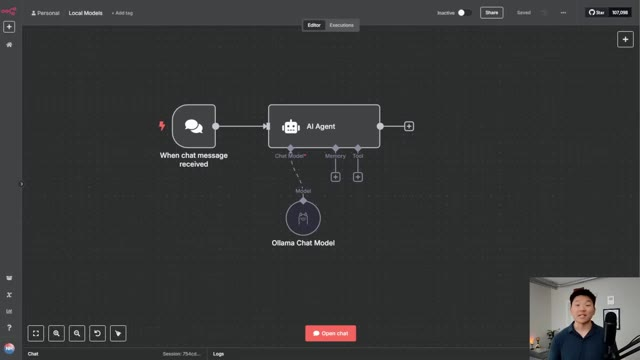
🔍 AgrandirDonc une fois que vous avez tout configuré, vous pouvez voir ce que nous avons en ce moment, c'est une version complètement hébergée localement de N8N en cours d'exécution. Nous avons notre Ollama qui est un modèle local, mais ici tout ce que nous pouvons voir, c'est que nous avons llama 3.2 latest. Donc ce que nous devons faire, c'est fondamentalement aller sur Ollama et choisir parmi tous les différents modèles open source qui sont disponibles et les installer sur notre machine très rapidement et tout cela va être gratuit. Donc laissez-moi vous montrer comment nous faisons cela. Donc vous allez aller sur ollama.com, je mettrai le lien dans la description, et vous n'avez même pas besoin de venir ici et de télécharger quoi que ce soit. Allez simplement ici, cliquez sur modèles, et maintenant nous avons tous les différents modèles que nous pouvons réellement télécharger et commencer à utiliser avec nos agents IA N8N.
Interface & Outils : Interface web de n8n (éditeur de workflow) et navigateur web.
Contenu textuel & Code : Paramètres du nœud Ollama Chat Model avec le champ Modèle configuré sur "llama3.2:latest".
Action / Démonstration : Configuration d'un modèle d'IA local (Ollama) à l'intérieur d'un workflow n8n.
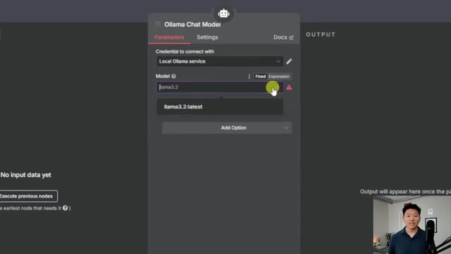
🔍 AgrandirDonc nous avons DeepSeek, qui a été le modèle open source le plus populaire, avec 48,1 millions de téléchargements. Nous avons tous ces autres modèles parmi lesquels choisir. Nous avons d'autres modèles Llama. Et c'est fondamentalement notre répertoire de différents modèles d'IA que nous pouvons tester gratuitement. Et juste pour vous montrer un exemple, faisons DeepSeek R1, qui est un modèle de réflexion. Et tout ce que nous allons faire, c'est que nous allons cliquer dessus. Et maintenant, nous avons quelques éléments à examiner.
Interface & Outils : Interface web de catalogue de modèles d'IA.
Contenu textuel & Code : Liste des modèles open-source avec leurs statistiques de téléchargement (deepseek-r1 affichant 48,1M pulls).
Action / Démonstration : Navigation et présentation du répertoire de modèles d'IA disponibles.
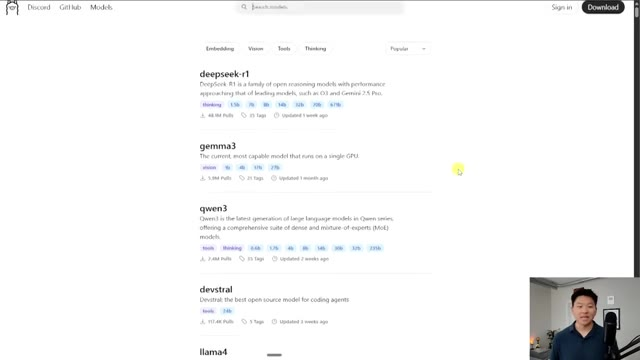
🔍 AgrandirDonc tout d'abord, nous avons les différents paramètres dans lesquels la version open source de DeepSeek est proposée. Nous avons donc 1,5 milliard, 7 milliards, 8 milliards, tout ce genre de choses. Et en bas, vous pouvez voir tous les différents modèles avec leurs tailles et leurs fenêtres de contexte. Et je ne suis pas vraiment un expert en matériel informatique et tout le reste. Mais ce que je ferais, c'est que j'irais sur Perplexity ou ChatGPT et je dirais, hé, voici les caractéristiques de mon ordinateur. Voici ma RAM, ma VRAM, ma puissance de traitement, tout ce genre de choses. Et je dirais, quel modèle devrais-je être capable d'utiliser ? Et juste pour référence, ceux-ci sont plutôt minuscules. Par exemple, si nous allons ici sur ma recherche Perplexity, si nous regardons certains des modèles propriétaires les plus populaires, comme GPT et Claude,
Interface & Outils : Navigateur web affichant le site d'Ollama.
Contenu textuel & Code : Tableau listant les modèles deepseek-r1 (1.5b, 7b, 8b, 14b, 32b, 70b, 671b) avec leurs tailles en Go et fenêtres de contexte (128K/160K).
Action / Démonstration : Le présentateur commente les différentes tailles de modèles open source de DeepSeek affichées à l'écran.
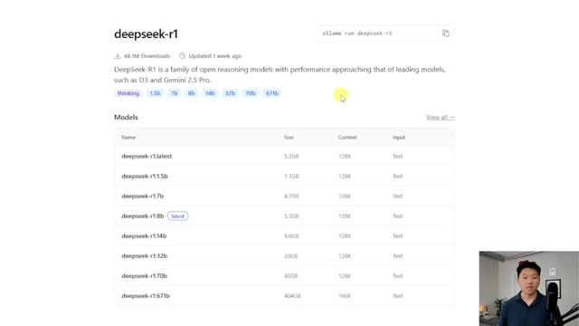
🔍 AgrandirGPT-4 fait presque 1 800 milliards, ce qui est tout simplement massif. Vous savez, par exemple GPT-4-o fait 200 milliards. Claude 3.5 Sonnet tourne autour de 175 milliards. Donc ces modèles propriétaires vont être beaucoup plus rapides et plus puissants que la plupart de ces modèles open source. Cet écart se réduit lentement et un jour, il y aura des modèles open source qui seront tout aussi puissants que ceux-ci.
Interface & Outils : Navigateur web affichant des pages d'information et de documentation sur les modèles d'IA.
Contenu textuel & Code : Texte comparatif sur le nombre de paramètres de GPT-4 (1.8 trillion), GPT-4o (200 milliards) et Claude 3.5 Sonnet (175 milliards) ; tableau des tailles des modèles DeepSeek-R1 sur Ollama.
Action / Démonstration : Le présentateur commente et compare les tailles de différents modèles d'intelligence artificielle propriétaires et open source.
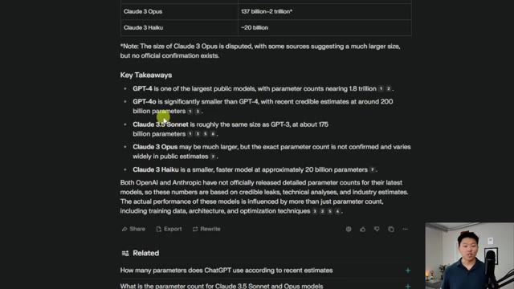
🔍 Agrandir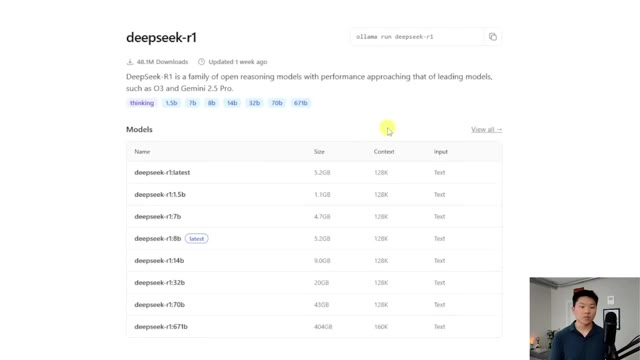
🔍 AgrandirMais pour l'instant, c'est le genre de limitation des modèles open source. Et vous allez aussi être limité en fonction de la machine locale réelle sur laquelle vous allez installer et exécuter ces modèles. Mais bref, maintenant que c'est fait, allons-y par exemple, dans ce cas, téléchargeons DeepSeek R1. Ça fait 1,5 milliard de paramètres. Donc tout ce que je vais faire, c'est aller de l'avant et cliquer sur ce bouton de copie ici. Donc je copie juste le nom DeepSeek tiret R1 deux-points 1,5B. Je vais ouvrir notre Docker et nous pouvons voir notre conteneur avec tous ces différents conteneurs dedans. Et ce que je vais faire, c'est en gros juste ouvrir le conteneur Ollama qui a l'image Ollama dedans. Et tout ce que j'ai à faire, c'est de cliquer sur exec.
Interface & Outils : Navigateur web et application Docker Desktop
Contenu textuel & Code : Liste des variantes du modèle deepseek-r1 (latest, 1.5b, 7b, 8b, 14b, 32b, 70b, 671b) et liste des conteneurs Docker (self-hosted-ai-starter-kit).
Action / Démonstration : Présentation des différentes tailles de modèles DeepSeek-R1 disponibles sur Ollama et visualisation des services conteneurisés dans Docker.
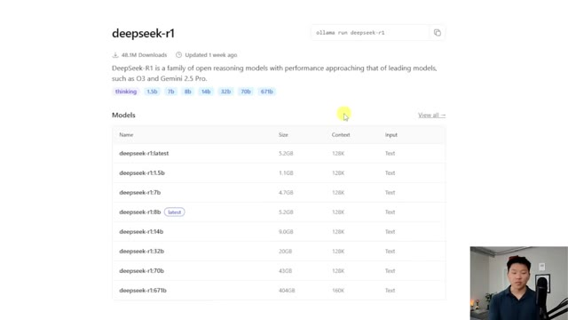
🔍 Agrandir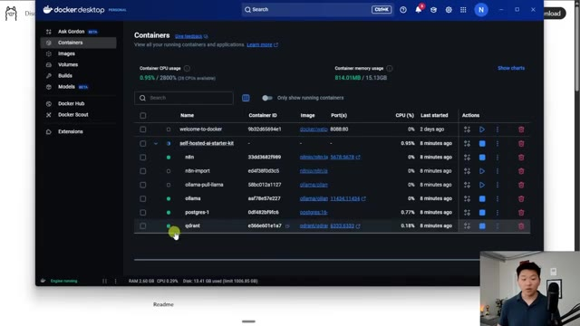
🔍 AgrandirEt je vais juste taper Ollama pull. Je vais juste coller ce qu'on vient de copier, c'est-à-dire DeepSeek R1. Je vais appuyer sur entrée. En ce moment, ce qu'il fait, c'est qu'il récupère DeepSeek. Il l'installe sur notre machine. Et ensuite, une fois que ce sera fait, nous pourrons y accéder dans n8n. D'accord. Nous venons donc d'obtenir notre message de réussite. Je vais retourner dans notre n8n local et ouvrir ce nœud Ollama. Et maintenant, si je clique sur cette flèche, nous voyons DeepSeek R1 juste ici. Je suis donc passé à autre chose. Maintenant, nous utilisons DeepSeek et testons simplement que ça fonctionne. Je vais juste dire, raconte-moi une blague. Et maintenant, nous n'accédons plus à notre modèle Ollama local. Nous utilisons notre
Interface & Outils : Docker Desktop et n8n (éditeur de workflows d'automatisation).
Contenu textuel & Code : Commande `ollama pull deepseek-r1:1.5b` dans le terminal Docker et diagramme de workflow n8n (When chat message received -> AI Agent -> Ollama Chat Model).
Action / Démonstration : Téléchargement et installation du modèle DeepSeek R1 via Docker, suivi de sa configuration dans un workflow n8n.
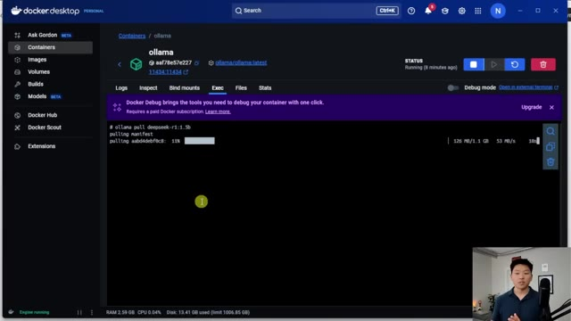
🔍 Agrandir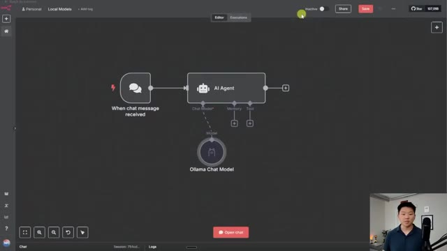
🔍 Agrandirle DeepSeek R1. Et vous pouvez le voir parce que c'est un modèle de réflexion et il a dit, réfléchis, réfléchis, pourquoi est-ce que les squelettes ne se battent pas entre eux ? Parce qu'ils n'ont pas de cran. Et donc c'est vraiment aussi simple que ça. Et maintenant tout ce qu'on aurait à faire, c'est de revenir dans Ollama, de cliquer sur modèles, et on pourrait regarder tous les différents modèles d'IA, ainsi que les différents paramètres qui sont proposés et simplement les importer dans notre Docker. Donc par exemple, disons que nous voulions importer Qwen et que je veux importer Qwen 1,7 milliard de paramètres. Je copiereis simplement le nom, irais dans notre Ollama sur Docker dans l'onglet exec.
Interface & Outils : Interface n8n / workflow visuel et page web de documentation/catalogue de modèles IA.
Contenu textuel & Code : Blague générée par DeepSeek R1 sur les squelettes : "Why don't skeletons fight each other? Because they don't have the 'Guts'!" avec balises de pensée <think>.
Action / Démonstration : Démonstration de l'exécution d'un workflow d'agent IA utilisant le modèle DeepSeek R1 via Ollama.
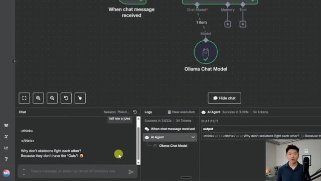
🔍 Agrandir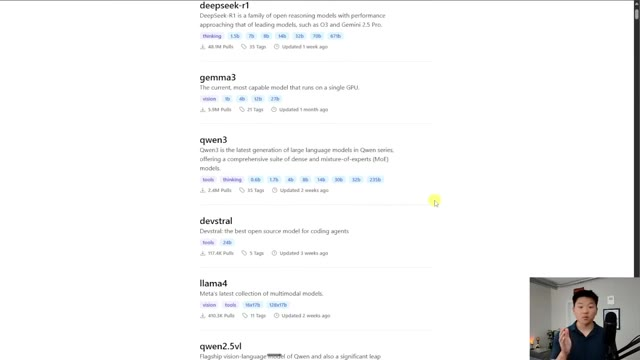
🔍 Agrandirnous allons dire ollama pull et je vais simplement coller cette valeur et maintenant nous allons simplement récupérer qwen juste comme ça super simple nous avons notre message de réussite je vais retourner dans n8n cliquer sur ollama et nous l'ouvrons et nous pouvons voir que maintenant nous avons notre modèle qwen 3 1.7 milliard de paramètres et c'est tellement cool parce que encore une fois cela tourne localement sur mon pc là-bas tout va être complètement gratuit et nous avons tellement d'options différentes parmi lesquelles choisir et comme je l'ai dit je ne suis pas un expert en poids de modèles et en paramètres mais gardez juste à l'esprit que je ne compterais probablement pas trop sur un modèle de 1,7 milliard de paramètres ou de 1,5 milliard de paramètres pour autre chose que des choses très basiques
Interface & Outils : Docker Desktop (pour la gestion des conteneurs) et n8n (interface de workflow d'automatisation).
Contenu textuel & Code : - Terminal : `ollama pull deepseek-r1:1.5b`, `ollama pull qwen:1.7b`, avec logs de succès. - n8n : champ "Model" réglé sur `qwen:1.7b`, réponse JSON affichant la génération de texte (blague sur les squelettes).
Action / Démonstration : Exécution de commandes dans le terminal du conteneur Docker pour télécharger de nouveaux modèles IA, suivie de la sélection et de l'utilisation du modèle 'qwen:1.7b' au sein d'un workflow n8n.
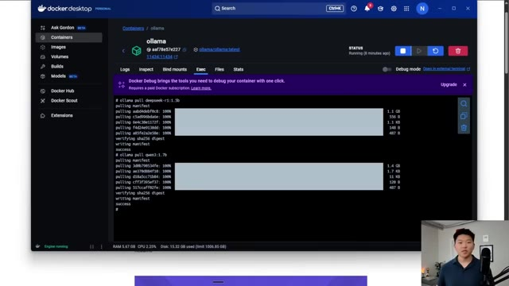
🔍 Agrandir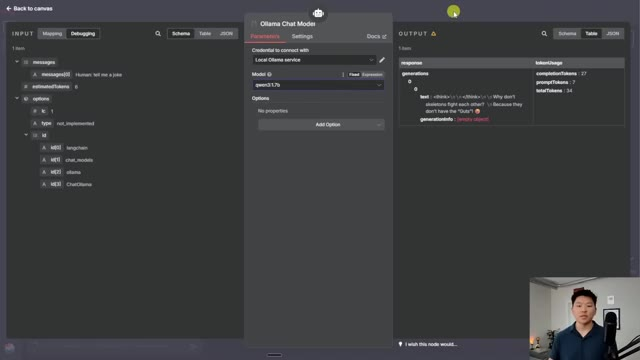
🔍 Agrandirutilisation conversationnelle. Si vous voulez avoir des agents avec l'appel d'outils et tout ce genre de choses en utilisant des modèles locaux, vous allez probablement en vouloir au moins environ 14 milliards ou 32 milliards. Mais encore une fois, ils sont complètement gratuits. Vous pouvez donc simplement tester autant que vous voulez. Quoi qu'il en soit, laissez-moi juste vous montrer quelques commandes utiles que vous pouvez utiliser à l'intérieur de cet exec du conteneur olama.
Interface & Outils : Navigateur web (catalogue de modèles) et Docker Desktop.
Contenu textuel & Code : Liste de modèles open source (deepseek-r1, gemma3, qwen3, devstral) et commandes terminal de téléchargement (ollama pull deepseek-r1:1.5b, ollama pull qwen3:1.7b).
Action / Démonstration : Navigation dans le catalogue de modèles et téléchargement de modèles via le terminal dans Docker.
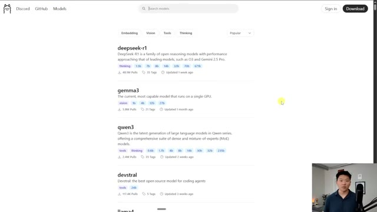
🔍 Agrandir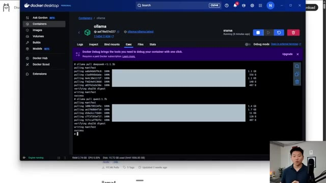
🔍 AgrandirAlors, disons que vous voulez simplement voir quels modèles vous avez à disposition. Vous pouvez aller de l'avant et taper ollama list. Et cela va nous montrer, ok, vous avez qwen, deepseek et llama 3.2. Maintenant, disons que nous voulions nous débarrasser de l'un d'eux. Débarrassons-nous simplement du qwen que nous venons d'installer. Je taperais simplement ollama rm, ce qui signifie remove (supprimer). Et je pourrais simplement coller le nom du modèle que nous voulons supprimer, appuyer sur entrée. Et maintenant, il est dit que qwen est supprimé. Si je retourne dans nos modèles locaux, que nous ouvrons celui-ci, nous n'avons plus qwen. Comme vous pouvez le voir, nous avons seulement deepseek ou llama à choisir. Et c'est aussi simple que ça. Ça se met à jour en temps réel. Vous n'avez même pas besoin, vous savez, de faire docker compose down et de le relancer. Nous sommes essentiellement prêts à repartir
Interface & Outils : Terminal de commandes et interface de workflow de type n8n.
Contenu textuel & Code : Commandes Ollama (ollama pull, ollama list) et liste des modèles locaux (qwen3:1.7b, deepseek-r1:1.5b, llama3.2).
Action / Démonstration : Affichage de la liste des modèles disponibles et sélection d'un modèle dans une interface de workflow.
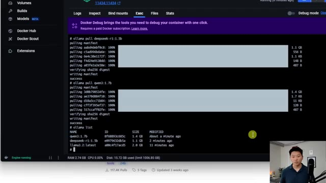
🔍 Agrandir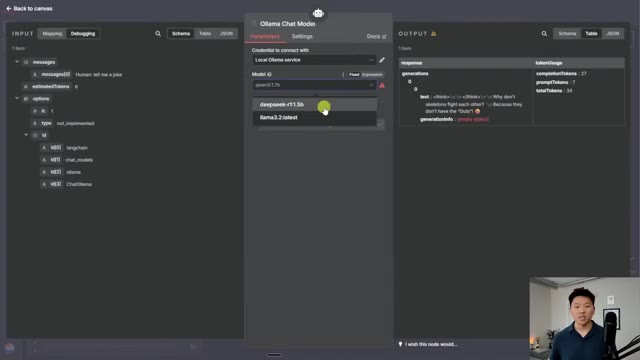
🔍 Agrandirrapide et facile. Et comme je l'ai dit, vous avez tous ces modèles parmi lesquels choisir. Donc, c'est tout pour celui-ci. Je sais que c'était court, mais je voulais juste vous montrer à quel point il est simple et facile de faire tourner ces différents modèles locaux. Et cela peut sembler un peu intimidant au début, mais après cette vidéo, vous pouvez voir que ce n'est vraiment pas si terrible. Alors, si vous avez appris quelque chose de nouveau ou si vous avez apprécié cette vidéo, mettez un pouce bleu, ça m'aide énormément. Et je vous dis à tous à la prochaine. Merci tout le monde.
Interface & Outils : Interface web n8n ou équivalent d'automatisation de workflow, panneau de chat intégré.
Contenu textuel & Code : Workflow comprenant les nœuds 'When chat message received', 'AI Agent' et 'Ollama Chat Model'. Sortie du chat affichant une blague : 'Why don't skeletons fight each other? Because they don't have the Guts!'.
Action / Démonstration : Exécution d'un workflow testant un modèle de langage local via Ollama dans un agent IA.
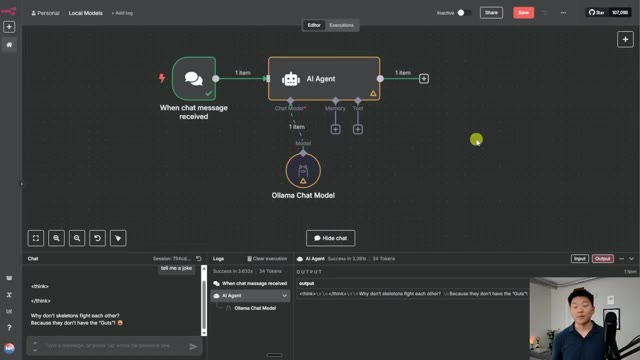
🔍 Agrandir